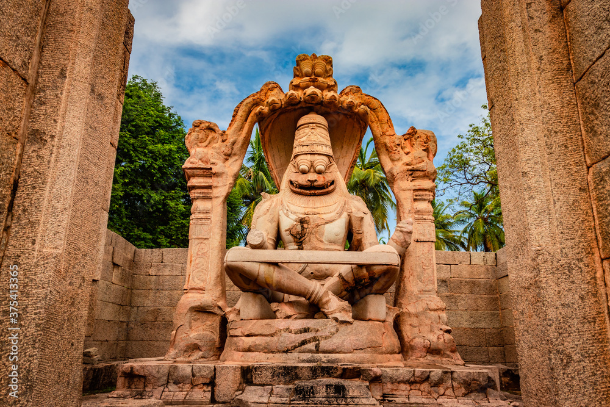

Lakshmi Narasimha Temple is located in Narasimhula Palle, Jagityal District in Telangana, India. It is the abode of Narsimha Swamy, the fourth avatar of Vishnu, and his consort Devi Lakshmi. The place has garnered considerable crowd over the years. The temple was built during the reign of the Chalukyas, and later expanded by the Kakatiyas. Description The temple houses three forms of Narasimha. The first is in his natural seated posture. The second is the angry Ugra form with which he had destroyed the demon Hiranyakashipu. The third is the Saumya (peaceful) avatar of Balaji, similar to the one at Tirupati. There is a small temple of Sri Venugopal as well, with Rukmini and Satyabhama. An idol of Yama, the lord of Dharma, stands at the entrance of the temple and the devotees are said to offer their first prayer to him when they come to Dharmapuri, and then to Lord Aanjaney Swamy, the Kshetra Swamy, and chief devotee of Vishnu. Worship A Brahmotsav is held after holi each year. The temple also witnesses weddings of couples who wish to commence their life together with the blessing of the lord. Other Hindu festivals such as Bonalu, Dussera, etc are also celebrated here. Pilgrims generally perform ‘Satya Narayana Puja’ at this place.
